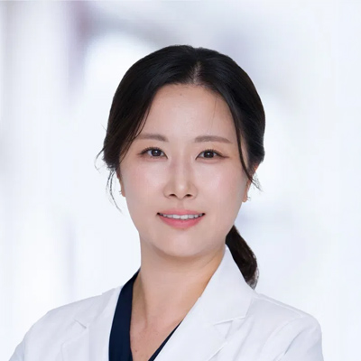
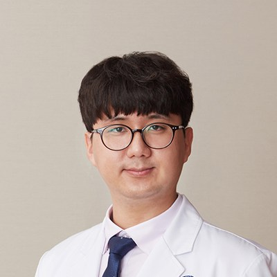
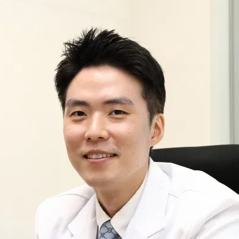
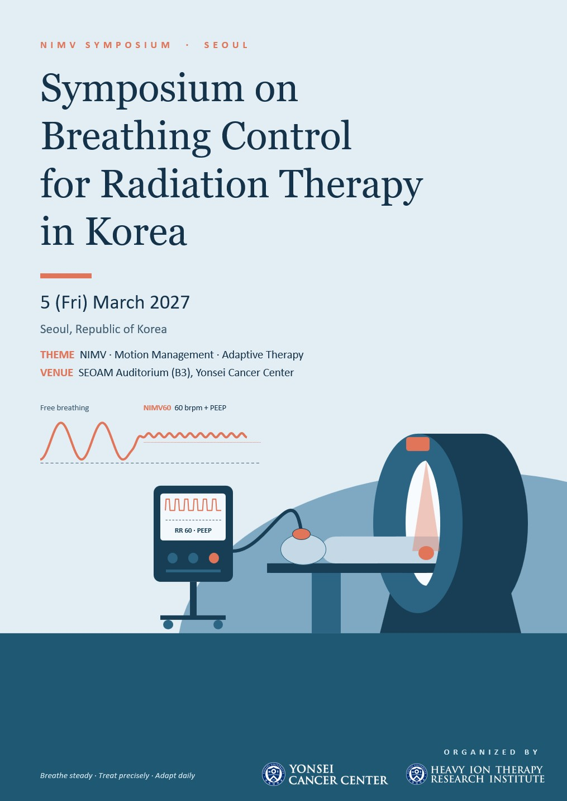

유도솔 교수
동남권원자력의학원
CPAP
심포지엄 소개
호흡에 따른 종양 움직임은 흉부·상복부 방사선치료에서 여전히 가장 큰 불확실성 중 하나입니다.
종양은 숨을 쉴 때마다 5–20 mm까지 움직입니다. 이 움직임은 치료 마진을 넓히고 폐·간·장의 선량을 높이며, 입자치료에서는 빔의 비정(range)까지 바꿉니다. 호흡 코칭, 복부 압박, 호흡 정지, 게이팅 모두 도움이 되지만, 각 방법은 환자의 협조에 의존하거나 무언가를 포기해야 합니다.
비침습적 호흡 보조는 다른 길을 제시합니다. 환자 대신 기계가 호흡 패턴을 정해 주는 것입니다. CPAP은 폐 용적을 늘리고 호흡을 안정시킵니다. PEEP과 함께 분당 약 60회로 환기하는 비침습적 기계환기(NIMV)는 진정이나 긴 훈련 없이도 움직임을 작고, 규칙적이며, 재현성 있게 만듭니다.
국내에서도 이미 여러 기관이 광자치료와 입자치료 모두에서 CPAP과 NIMV로 환자의 호흡을 조절하며 치료하고 있습니다. 이번 심포지엄은 이 경험을 가진 방사선종양학과 의사와 의학물리학자가 한자리에 모여 프로토콜, 워크플로우, 임상 현장의 교훈을 나누는 자리이며, 세션 사이에는 벤틸레이터 현장 시연도 진행합니다.
국내 기관들이 CPAP으로 폐 용적을 늘리고 치료 중 호흡을 안정시키는 방법을 소개합니다.
광자·입자치료에 NIMV를 도입하기 위한 물리, 워크플로우, 팀 교육을 다룹니다.
분당 60회의 빠르고 얕은 환기, 그리고 심흡기 호흡정지(DIBH)와의 결합을 다룹니다.
1시간의 시연 시간 동안 벤틸레이터, 마스크, 설정을 직접 확인할 수 있습니다.
방사선종양학과 의사, 의학물리학자, 방사선사, 간호사, 호흡치료 관련 전문가를 대상으로 합니다.

인사말
존경하는 선생님들께,
2027년 4월 16일 연세암병원에서 열리는 Symposium on Breathing Control for Radiation Therapy in Korea에 선생님들을 모시게 되어 기쁩니다.
지난 몇 년 사이 CPAP과 비침습적 기계환기(NIMV)는 국내 여러 기관에서 초기 경험을 넘어 일상 진료로 자리 잡아 가고 있습니다. 호흡 움직임을 따라가는 대신 호흡 자체를 조절하는 방식입니다.
그러나 조절만으로는 절반입니다. 재현해야 하는 것은 벤틸레이터의 설정값이 아니라 환자의 호흡 상태이며, 표면유도 방사선치료(SGRT)는 매 치료마다 그 상태를 확인하고 벗어나면 빔을 멈출 수 있게 해 줍니다. 호흡 조절과 표면유도는 함께할 때 가장 효과적이며, 이번 심포지엄은 두 가지를 함께 다룹니다.
각 기관은 환자 선택, 설정, 직원 교육, 움직임 확인 방법을 대부분 독자적으로 익혀 왔습니다. 이제는 이 경험을 함께 모을 때라고 생각합니다.
이번 심포지엄은 세 개의 세션으로 구성됩니다. 첫 번째 세션은 CPAP 임상 경험, 두 번째 세션은 NIMV 도입을 위한 물리와 팀워크, 세 번째 세션은 NIMV60p와 MANIV-DIBH 등 최신 접근법을 다룹니다. 세션 사이에는 벤틸레이터가 실제로 작동하는 모습을 현장 시연으로 보실 수 있습니다.
이 자리가 서로의 경험을 솔직하게 나누고, 더 많은 환자가 호흡 조절과 표면유도의 도움을 받을 수 있도록 하는 협력이 시작되는 계기가 되기를 바랍니다. 서울에서 뵙기를 기대합니다.
장지석
프로그램
| 13:00–13:05 | 개회 | |
| 13:05–13:10 | 환영사 | |
| SESSION I CPAP 임상 적용 | ||
| 13:10–13:30 | CPAP 유도솔 교수 · 동남권원자력의학원 |
MD Talk |
| 13:30–13:50 | CPAP 이준복 교수 · 강북삼성병원 |
MD Talk |
| 13:50–14:10 | CPAP 장지현 교수 · 서울대학교병원 |
MD Talk |
| 14:10–14:30 | 휴식 | |
| SESSION II NIMV 프로그램 구축 | ||
| 14:30–14:50 | Implementation of NIMV into Radiation Therapy 김창환 교수 · 연세암병원 |
Medical Physics Talk |
| 14:50–15:10 | Respiratory Education Team 정진홍 교수 · 서울아산병원 |
MD Talk |
| 15:10–15:30 | Implementation of NIMV into Particle Therapy 정상훈 교수 · 삼성서울병원 |
Medical Physics Talk |
| 15:30–16:30 | 휴식 및 NIMV 현장 시연 | |
| SESSION III NIMV-60p 임상 경험 | ||
| 16:30–16:50 | NIMV-60p 김나리 교수 · 삼성서울병원 |
MD Talk |
| 16:50–17:10 | NIMV-60p + MANIV-DIBH 장지석 교수 · 연세암병원 |
MD Talk |
| 17:10–17:30 | NIMV-60p 변화경 교수 · 용인세브란스병원 |
MD Talk |
| 17:30–17:35 | 폐회 | |
연자
동남권원자력의학원
CPAP

강북삼성병원
CPAP

서울대학교병원
CPAP

연세암병원
Implementation of NIMV into Radiation Therapy

서울아산병원
Respiratory Education Team

삼성서울병원
Implementation of NIMV into Particle Therapy

삼성서울병원
NIMV-60p

연세암병원
NIMV-60p + MANIV-DIBH
용인세브란스병원
NIMV-60p
